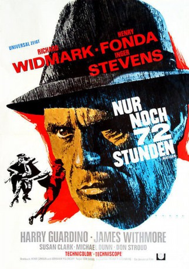
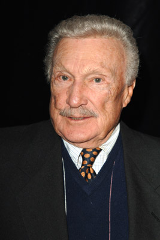
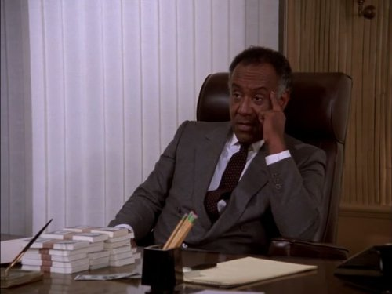
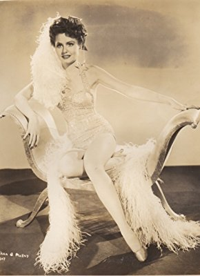

#12022 Nur noch 72 Stunden
Alternativ: Madigan (Englischer Titel)
 
 IMDB-Wertung: 6.5 / 10
IMDB-Wertung: 6.5 / 10  Tomatometer: 100
Tomatometer: 100  Metascore: 0
Metascore: 0 
Dan Madigan geht ein Killer durch die Lappen. Madigans unnachgiebiger Chef fordert, den Killer in 72 Stunden dingfest zu machen. Dans Frau Julia fordert vom Chef den Abzug ihres Mannes von dem Fall. Dan stirbt bei dem Einsatz und Julia bleibt allein zurück.
Jahr: 1968
Dauer: 100 Minuten
FSK: 12
Land: USA Studio: A Universal PictureTonspuren:
Untertitel: Deutsch,
Auflösung: 720p (1280x544) Größe: 4464 MB
Genre: Thriller, Drama, Krimi
Regisseur: Don Siegel
Drehbuch: Howard Rodman, Abraham Polonsky, Richard Dougherty
Soundtrack: Don Costa
Darsteller:
 Richard Widmark als Det. Daniel Madigan
Richard Widmark als Det. Daniel Madigan Henry Fonda als Commissioner Anthony X. Russell
Henry Fonda als Commissioner Anthony X. Russell- Inger Stevens als Julia Madigan
 Harry Guardino als Det. Rocco Bonaro
Harry Guardino als Det. Rocco Bonaro James Whitmore als Chief Insp. Charles Kane
James Whitmore als Chief Insp. Charles Kane- Susan Clark als Tricia Bentley
- Michael Dunn als Midget Castiglione
- Steve Ihnat als Barney Benesch
 Don Stroud als Hughie
Don Stroud als Hughie- Sheree North als Jonesy
-  Warren Stevens als Capt. Ben Williams
-  Raymond St. Jacques als Dr. Taylor
 Bert Freed als Chief of Detectives Hap Lynch
Bert Freed als Chief of Detectives Hap Lynch- Harry Bellaver als Mickey Dunn
- Frank Marth als Lt. James Price
- Lloyd Gough als Earl Griffin
- Virginia Gregg als Esther Newman
 Henry Beckman als Philip Downes
Henry Beckman als Philip Downes Woodrow Parfrey als Marvin
Woodrow Parfrey als Marvin- Lloyd Haynes als Sam Woodley
- Gloria Calomee als Policewoman Doris Hawkins
- Ray Montgomery als Det. O'Mara
 Abel Fernandez als Detective Rodriguez
Abel Fernandez als Detective Rodriguez- Robert Biheller als Man
- Bob O'Connell als Man
- Conrad Bain als Hotel Clerk
 Ed Crowley als Man at precinct
Ed Crowley als Man at precinct- Diane Sayer als Doreen
-  Kathleen O'Malley als Woman
- Nina Varela als Woman
- Lincoln Kilpatrick als Patrolman Grimes
 John McLiam als Dunne (uncredited)
John McLiam als Dunne (uncredited) James Nolan als Detective (uncredited)
James Nolan als Detective (uncredited)- Richard O'Brien als Det. O'Brien
- Robert Granere als Buster
- Dallas Mitchell als Tom Gavin
- Rita Lynn als Rita Bonaro
- Seth Allen als Subway dispatcher
- Robert Ball als Prisoner
- Kay Turner als Stella
- Albert Henderson als Lt. Strong
- Toian Matchinga als Rosita
- Paul Sorensen als Benesh Look-Alike in Saloon
- Ollie O'Toole als Man
- Al Dunlap als Man
- Pepe Hern als Man
- Scott Hale als Ambulance driver
- Sean Kennedy als Man
- Tom Rosqui als Man
- Mina Martinez als Woman
Datei: X:\1968\Nur noch 72 Stunden (1968, FSK12, 1280x544).mkv seit 11.11.2019
Festplatte: Gemischt-01+Anime
 Es gibt insgesamt 25 Filme in der Gruppe '1968'
Es gibt insgesamt 25 Filme in der Gruppe '1968'